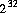
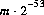
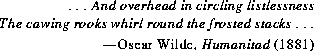

BitSet to
represent bit values.
CHAPTER 21
The java.util package contains various utility classes and interfaces.
Notable among these utilities is the Enumeration interface. An object that implements this interface will generate a series of items, delivering them on demand, one by one. Container classes such as Dictionary and Vector provide one or more methods that return an Enumeration.
A BitSet contains an indexed collection of bits that may be used to represent a set of nonnegative integers.
The class Date provides a convenient way to represent and manipulate time and date information. Dates may be constructed from a year, month, day of month, hour, minute, and second, and those six components, as well as the day of the week, may be extracted from a date. Time zones and daylight saving time are properly accounted for.
The abstract class Dictionary represents a collection of key-value pairs and allows a value to be fetched given the key. The class Hashtable is one concrete implementation of Dictionary. The class Properties extends Hashtable by allowing one table to provide default values for another and by providing standard means for reading entries from files and writing entries to files.
The class Observable provides a mechanism for notifying other objects, called "observers," whenever an Observable object is changed. An observer object may be any object that implements the Observer interface. (This notification mechanism is distinct from that provided by the wait and notify methods of class Object (§20.1) and is not connected with the thread scheduling mechanism.)
The class Random provides an extensive set of methods for pseudorandomly generating numeric values of various primitive types and with various distributions. Each instance of class Random is an independent pseudorandom generator.
A StringTokenizer provides an easy way to divide strings into tokens. The set of characters that delimit tokens is programmable. The tokenizing method is much simpler than the one used by the class java.io.StreamTokenizer. For example, a StringTokenizer does not distinguish among identifiers, numbers, and quoted strings; moreover, it does not recognize and skip comments.
The classes Vector and Stack are simple container classes that provide extensions to the capabilities of Java arrays. A Vector, unlike a Java array, can change its size, and many convenient methods are provided for adding, removing, and searching for items. A Stack is a Vector with additional operations such as push and pop.
The hierarchy of classes defined in package java.util is as follows. (Classes whose names are shown here in boldface are in package java.util; the others are in package java.lang and are shown here to clarify subclass relationships.)
Object§20.1interfaceEnumeration §21.1BitSet §21.2Date §21.3Dictionary §21.4Hashtable §21.5Properties §21.6Observable §21.7interfaceObserver §21.8Random §21.9StringTokenizer §21.10Vector §21.11Stack §21.12Throwable§20.22 Exception RuntimeExceptionEmptyStackException §21.13NoSuchElementException §21.14
java.util.EnumerationEnumeration interface will generate a series of
elements, one at a time. Successive calls to the nextElement method will return
successive elements of the series.
public interfaceEnumeration{ public booleanhasMoreElements(); public ObjectnextElement() throws NoSuchElementException; }
21.1.1 public boolean
hasMoreElements()
The result is true if and only if this enumeration object has at least one more element to provide.
21.1.2 public Object
nextElement()
throws NoSuchElementException
If this enumeration object has at least one more element to provide, such an element is returned; otherwise, a NoSuchElementException is thrown.
As an example, the following code prints every key in the hashtable ht and its length. The method keys returns an enumeration that will deliver all the keys, and we suppose that the keys are, in this case, known to be strings:
Enumeration e = ht.keys();
while (e.hasMoreElements()) {
String key = (String)e.nextElement();
System.out.println(key + " " + key.length());
}
java.util.BitSetBitSet object is a set of bits that grows as needed. The bits of a BitSet are
indexed by nonnegative integers. Each bit can be individually examined, set, or
cleared. One BitSet may be used to modify the contents of another BitSet
through logical AND, logical inclusive OR, and logical exclusive OR operations.
public final classBitSetimplements Cloneable { publicBitSet(); publicBitSet(int nbits); public StringtoString(); public booleanequals(Object obj) public inthashCode(); public Objectclone(); public booleanget(int bitIndex); public voidset(int bitIndex); public voidclear(int bitIndex); public voidand(BitSet set); public voidor(BitSet set); public voidxor(BitSet set); public intsize(); }
21.2.1 public
BitSet()
This constructor initializes a newly created BitSet so that all bits are clear.
21.2.2 public
BitSet(int nbits)
This constructor initializes a newly created BitSet so that all bits are clear.
Enough space is reserved to explicitly represent bits with indices in the range 0
through nbits-1.
21.2.3 public String
toString()
For every index for which this BitSet contains a bit in the set state, the decimal
representation of that index is included in the result. Such indices are listed in
order from lowest to highest, separated by ", " (a comma and a space) and surrounded by braces, resulting in the usual mathematical notation for a set of integers.
Overrides the toString method of Object (§20.1.2).
BitSet drPepper = new BitSet();Now
drPepper.toString() returns "{}".
drPepper.set(2);Now
drPepper.toString() returns "{2}".
drPepper.set(4); drPepper.set(10);Now
drPepper.toString() returns "{2, 4, 10}".
21.2.4 public boolean
equals(Object obj)
The result is true if and only if the argument is not null and is a BitSet object
such that, for every nonnegative int index k:
((BitSet)obj).get(k) == this.get(k)Overrides the
equals method of Object (§20.1.3).21.2.5 public int
hashCode()
The hash code depends only on which bits have been set within this BitSet. The
algorithm used to compute it may be described as follows.
Suppose the bits in the BitSet were to be stored in an array of long integers called, say, bits, in such a manner that bit k is set in the BitSet (for nonnegative values of k) if and only if the expression:
((k>>6) < bits.length) && ((bits[k>>6] & (1L << (bit & 0x3F))) != 0)is true. Then the following definition of the
hashCode method would be a correct
implementation of the actual algorithm:
public synchronized int hashCode() {
long h = 1234;
for (int i = bits.length; --i >= 0; ) {
h ^= bits[i] * (i + 1);
}
return (int)((h >> 32) ^ h);
}
Note that the hash code value changes if the set of bits is altered.
Overrides the hashCode method of Object (§20.1.4).
21.2.6 public Object
clone()
Cloning this BitSet produces a new BitSet that is equal to it.
Overrides the clone method of Object (§20.1.5).
21.2.7 public boolean
get(int bitIndex)
The result is true if the bit with index bitIndex is currently set in this BitSet;
otherwise, the result is false.
If bitIndex is negative, an IndexOutOfBoundsException is thrown.
21.2.8 public void
set(int bitIndex)
The bit with index bitIndex in this BitSet is changed to the "set" (true) state.
If bitIndex is negative, an IndexOutOfBoundsException is thrown.
If bitIndex is not smaller than the value that would be returned by the size method (§21.2.13), then the size of this BitSet is increased to be larger than bitIndex.
21.2.9 public void
clear(int bitIndex)
The bit with index bitIndex in this BitSet is changed to the "clear" (false)
state.
If bitIndex is negative, an IndexOutOfBoundsException is thrown.
If bitIndex is not smaller than the value that would be returned by the size method (§21.2.13), then the size of this BitSet is increased to be larger than bitIndex.
21.2.10 public void
and(BitSet set)
This BitSet may be modified by clearing some of its bits. For every nonnegative
int index k, bit k of this BitSet is cleared if bit k of set is clear.
21.2.11 public void
or(BitSet set)
This BitSet may be modified by setting some of its bits. For every nonnegative
int index k, bit k of this BitSet is set if bit k of set is set.
21.2.12 public void
xor(BitSet set)
This BitSet may be modified by inverting some of its bits. For every nonnegative
int index k, bit k of this BitSet is inverted if bit k of set is set.
21.2.13 public int
size()
This method returns the number of bits of space actually in use by this BitSet to
represent bit values.
java.util.DateDate provides a system-independent abstraction of dates and times, to a
millisecond precision. Dates may be constructed from a year, month, date (day of
month), hour, minute, and second; those six components and the day of the week,
may be extracted; and dates may be compared and converted to a readable string.
public classExamples:Date{ publicDate(); publicDate(long time); publicDate(int year, int month, int date); publicDate(int year, int month, int date, int hours, int minutes); publicDate(int year, int month, int date, int hours, int minutes, int seconds); publicDate(String s) throws IllegalArgumentException; public StringtoString(); public booleanequals(Object obj); public inthashCode(); public intgetYear(); public voidsetYear(int year); public intgetMonth(); public voidsetMonth(int month); public intgetDate(); public voidsetDate(int date); public intgetDay(); public intgetHours(); public voidsetHours(int hours); public intgetMinutes(); public voidsetMinutes(int minutes); public intgetSeconds(); public voidsetSeconds(int seconds); public longgetTime(); public voidsetTime(long time); public booleanbefore(Date when); public booleanafter(Date when); public StringtoLocaleString(); public StringtoGMTString(); public intgetTimezoneOffset(); public static longUTC(int year, int month, int date, int hours, int minutes, int seconds); public static longparse(String s) throws IllegalArgumentException; }
Date class is intended to reflect UTC (Coordinated Universal Time), it may not do so exactly, depending on the host environment of the Java system. Nearly all modern operating systems assume that 1 day = = 86400 seconds in all cases. In UTC, however, about once every year or two there is an extra second, called a "leap second." The leap second is always added as the last second of the day, and nearly always on December 31 or June 30. For example, the last minute of the year 1995 was 61 seconds long, thanks to an added leap second.Most computer clocks are currently not accurate enough to be able to reflect the leap-second distinction. Some computer standards are defined in terms of GMT (Greenwich Mean Time), which is equivalent to UT (Universal Time). GMT is the "civil" name for the standard; UT is the "scientific" name for the same standard. The distinction between UTC and UT is that UTC is based on an atomic clock and UT is based on astronomical observations, which for all practical purposes is an invisibly fine hair to split. Because the earth's rotation is not uniform-it slows down and speeds up in complicated ways-UT does not always flow uniformly. Leap seconds are introduced as needed into UTC so as to keep UTC within 0.9 seconds of UT1, which is a version of UT with certain corrections applied. There are other time and date systems as well; for example, the time scale used by GPS (the satellite-based Global Positioning System) is synchronized to UTC but is not adjusted for leap seconds. An interesting source of further information is the U. S. Naval Observatory, particularly the Directorate of Time at:
http://tycho.usno.navy.miland their definitions of "Systems of Time" at:
http://tycho.usno.navy.mil/systime.htmlIn all methods of class
Date that accept or return year, month, day of month, hours, minutes, and seconds values, the following representations are used:
 .
.
21.3.1 public
Date()
This constructor initializes a newly created Date object so that it represents the
instant of time that it was created, measured to the nearest millisecond.
21.3.2 public
Date(long time)
This constructor initializes a newly created Date object so that it represents the
instant of time that is time milliseconds after the standard base time known as
"the epoch," namely 00:00:00 GMT on January 1, 1970. See also the method
currentTimeMillis (§20.18.6) of class System.
21.3.3 public
Date(int year, int month, int date)
This constructor initializes a newly created Date object so that it represents midnight at the beginning of the day specified by the year, month, and date arguments, in the local time zone. Thus, it has the same effect as the constructor call
(§21.3.5):
Date(year, month, date, 0, 0, 0)
21.3.4 public
Date(int year, int month, int date,
int hours, int minutes)
This constructor initializes a newly created Date object so that it represents the
instant at the start of the minute specified by the year, month, date, hours, and
minutes arguments, in the local time zone. Thus, it has the same effect as the constructor call (§21.3.5):
Date(year, month, date, hours, minutes, 0)
21.3.5 public
Date(int year, int month, int date,
int hours, int minutes, int seconds)
This constructor initializes a newly created Date object so that it represents the
instant at the start of the second specified by the year, month, date, hours,
minutes, and seconds arguments, in the local time zone.
21.3.6 public
Date(String s)
throws IllegalArgumentException
This constructor initializes a newly created Date object so that it represents the
date and time indicated by the string s, which is interpreted as if by the parse
method (§21.3.31).
21.3.7 public String
toString()
This Date object is converted to a String of the form:
"dow mon dd hh:mm:ss zzz yyyy"where:
dow is the day of the week (Sun, Mon, Tue, Wed, Thu, Fri, Sat).
mon is the month (Jan, Feb, Mar, Apr, May, Jun, Jul, Aug, Sep, Oct, Nov, Dec).
dd is the day of the month (01 through 31), as two decimal digits.
hh is the hour of the day (00 through 23), as two decimal digits.
mm is the minute within the hour (00 through 59), as two decimal digits.
ss is the second within the minute (00 through 61), as two decimal digits.
zzz is the time zone (and may reflect daylight saving time). Standard time zone abbreviations include those recognized by the method parse (§21.3.31). If time zone information is not available, then zzz is empty-that is, it consists of no characters at all.
yyyy is the year, as four decimal digits.
toLocaleString (§21.3.27) and toGMTString (§21.3.28).
Overrides the toString method of Object (§20.1.2).
21.3.8 public boolean
equals(Object obj)
The result is true if and only if the argument is not null and is a Date object that
represents the same point in time, to the millisecond, as this Date object. Thus
two Date objects are equal if and only if the getTime method (§21.3.23) returns
the same long value from both.
Overrides the equals method of Object (§20.1.3).
21.3.9 public int
hashCode()
The result is the exclusive OR of the two halves of the primitive long value
returned by the getTime method (§21.3.23). That is, the hash code is the value of
the expression:
(int)(this.getTime()^(this.getTime()>>>32))Overrides the
hashCode method of Object (§20.1.4).21.3.10 public int
getYear()
The returned value is the result of subtracting 1900 from the year that contains or
begins with the instant in time represented by this Date object, as interpreted in
the local time zone.
21.3.11 public void
setYear(int year)
This Date object is modified so that it represents a point in time within the specified year, with the month, date, hour, minute, and second the same as before, as
interpreted in the local time zone. (Of course, if the date was February 29, for
example, and the year is set to a non-leap year, then the new date will be treated
as if it were on March 1.)
21.3.12 public int
getMonth()
The returned value is a number (0 through 11) representing the month that contains or begins with the instant in time represented by this Date object, as interpreted in the local time zone.
21.3.13 public void
setMonth(int month)
This Date object is modified so that it represents a point in time within the specified month, with the year, date, hour, minute, and second the same as before, as
interpreted in the local time zone. If the date was October 31, for example, and the
month is set to June, then the new date will be treated as if it were on July 1,
because June has only 30 days.
21.3.14 public int
getDate()
The returned value is a number (1 through 31) representing day of the month that
contains or begins with the instant in time represented by this Date object, as
interpreted in the local time zone.
21.3.15 public void
setDate(int date)
This Date object is modified so that it represents a point in time within the specified day of the month, with the year, month, hour, minute, and second the same as
before, as interpreted in the local time zone.If the date was April 30, for example,
and the date is set to 31, then it will be treated as if it were on May 1, because
April has only 30 days.
21.3.16 public int
getDay()
The returned value (0 = Sunday, 1 = Monday, 2 = Tuesday, 3 = Wednesday, 4 =
Thursday, 5 = Friday, 6 = Saturday) represents the day of the week that contains or
begins with the instant in time represented by this Date object, as interpreted in
the local time zone.
21.3.17 public int
getHours()
The returned value is a number (0 through 23) representing the hour within the
day that contains or begins with the instant in time represented by this Date
object, as interpreted in the local time zone.
21.3.18 public void
setHours(int hours)
This Date object is modified so that it represents a point in time within the specified hour of the day, with the year, month, date, minute, and second the same as
before, as interpreted in the local time zone.
21.3.19 public int
getMinutes()
The returned value is a number (0 through 59) representing the minute within the
hour that contains or begins with the instant in time represented by this Date
object, as interpreted in the local time zone.
21.3.20 public void
setMinutes(int minutes)
This Date object is modified so that it represents a point in time within the specified minute of the hour, with the year, month, date, hour, and second the same as
before, as interpreted in the local time zone.
21.3.21 public int
getSeconds()
The returned value is a number (0 through 61) representing the second within the
minute that contains or begins with the instant in time represented by this Date
object, as interpreted in the local time zone.
21.3.22 public void
setSeconds(int seconds)
This Date object is modified so that it represents a point in time within the specified second of the minute, with the year, month, date, hour, and minute the same
as before, as interpreted in the local time zone.
21.3.23 public long
getTime()
This method returns the time represented by this Date object, represented as the
distance, measured in milliseconds, of that time from the epoch (00:00:00 GMT
on January 1, 1970).
21.3.24 public void
setTime(long time)
This Date object is modified so that it represents a point in time that is time milliseconds after the epoch (00:00:00 GMT on January 1, 1970).
21.3.25 public boolean
before(Date when)
The result is true if and only if the instant represented by this Date object is
strictly earlier than the instant represented by when.
21.3.26 public boolean
after(Date when)
The result is true if and only if the instant represented by this Date object is
strictly later than the instant represented by when.
21.3.27 public String
toLocaleString()
This Date object is converted to a String of an implementation-dependent form.
The general intent is that the form should be familiar to the user of the Java application, wherever it may happen to be running. The intent is comparable to that of
the %c format supported by the strftime function of ISO C.
See also methods toString (§21.3.7) and toGMTString (§21.3.28).
21.3.28 public String
toGMTString()
This Date object is converted to a String of length 23 or 24 of the form:
"d mon yyyy hh:mm:ss GMT"where:
1 through 31), as one or two decimal digits.
Jan, Feb, Mar, Apr, May, Jun, Jul, Aug, Sep, Oct, Nov, Dec).
00 through 23), as two decimal digits.
00 through 59), as two decimal digits.
00 through 61), as two decimal digits.
GMT" to indicate Greenwich Mean Time.
See also methods toString (§21.3.7) and toLocaleString (§21.3.27).
21.3.29 public int
getTimezoneOffset()
This method returns the offset, measured in minutes, for the local time zone relative to UTC that is appropriate for the time represented by this Date object.
For example, in Massachusetts, five time zones west of Greenwich:
new Date(96, 1, 14).getTimezoneOffset() returns 300because on February 14, 1996, standard time (Eastern Standard Time) is in use, which is offset five hours from UTC; but:
new Date(96, 5, 1).getTimezoneOffset() returns 240because on May 1, 1996, daylight saving time (Eastern Daylight Time) is in use, which is offset only four hours from UTC.
This method produces the same result as if it computed:
(this.getTime() - UTC(this.getYear(), this.getMonth(), this.getDate(), this.getHours(), this.getMinutes(), this.getSeconds())) / (60 * 1000)
21.3.30 public static long
UTC(int year, int month, int date,
int hours, int minutes, int seconds)
The arguments are interpreted as a year, month, day of the month, hour of the day,
minute within the hour, and second within the minute, exactly as for the Date constructor of six arguments (§21.3.5), except that the arguments are interpreted relative to UTC rather than to the local time zone. The time indicated is returned
represented as the distance, measured in milliseconds, of that time from the epoch
(00:00:00 GMT on January 1, 1970).
21.3.31 public static long
parse(String s)
throws IllegalArgumentException
An attempt is made to interpret the string s as a representation of a date and time.
If the attempt is successful, the time indicated is returned represented as the distance, measured in milliseconds, of that time from the epoch (00:00:00 GMT on
January 1, 1970). If the attempt fails, an IllegalArgumentException is thrown.
The string s is processed from left to right, looking for data of interest.
Any material in s that is within the ASCII parenthesis characters ( and ) is ignored. Parentheses may be nested. Otherwise, the only characters permitted within s are these ASCII characters:
abcdefghijklmnopqrstuvwxyz ABCDEFGHIJKLMNOPQRSTUVWXYZ 0123456789,+-:/and whitespace characters (§20.5.19).
A consecutive sequence of decimal digits is treated as a decimal number:
+ or - and a year has already been recognized, then the number is a time-zone offset. If the number is less than 24, it is an offset measured in hours. Otherwise, it is regarded as an offset in minutes, expressed in 24-hour time format without punctuation. A preceding + means an eastward offset and a preceding - means a westward offset. Time zone offsets are always relative to UTC (Greenwich). Thus, for example, -5 occurring in the string would mean "five hours west of Greenwich" and +0430 would mean "four hours and thirty minutes east of Greenwich." It is permitted for the string to specify GMT, UT, or UTC redundantly-for example, GMT-5 or utc+0430.
1 to produce a number in the range 0 to 11), unless a month has already been recognized, in which case it is regarded as a day of the month.
AM, ignoring case, is ignored (but the parse fails if an hour has not been recognized or is less than 1 or greater than 12).
PM, ignoring case, adds 12 to the hour (but the parse fails if an hour has not been recognized or is less than 1 or greater than 12).
SUNDAY, MONDAY, TUESDAY, WEDNESDAY, THURSDAY, FRIDAY, or SATURDAY, ignoring case, is ignored. For example, sat, Friday, TUE, and Thurs are ignored.
JANUARY, FEBRUARY, MARCH, APRIL, MAY, JUNE, JULY, AUGUST, SEPTEMBER, OCTOBER, NOVEMBER, or DECEMBER, ignoring case, and considering them in the order given here, is recognized as specifying a month and is converted to a number (0 to 11). For example, aug, Sept, april, and NOV are recognized as months. So is Ma, which is recognized as MARCH, not MAY.
GMT, UT, or UTC, ignoring case, is treated as referring to UTC.
EST, CST, MST, or PST, ignoring case, is recognized as referring to the time zone in North America that is five, six, seven, or eight hours west of Greenwich, respectively. Any word that matches EDT, CDT, MDT, or PDT, ignoring case, is recognized as referring to the same time zone, respectively, during daylight saving time. (In the future, this method may be upgraded to recognize other time zone designations.)
s has been scanned, it is converted to a time result in one of two ways. If a time zone or time-zone offset has been recognized, then the year, month, day of month, hour, minute, and second are interpreted in UTC (§21.3.30) and then the time-zone offset is applied. Otherwise, the year, month, day of month, hour, minute, and second are interpreted in the local time zone.java.util.DictionaryDictionary is an object that associates elements with keys. Every key and
every element is an object. In any one Dictionary, every key is associated at
most one element. Given a Dictionary and a key, the associated element can be
looked up.
public abstract classAs a rule, theDictionary{ abstract public intsize(); abstract public booleanisEmpty(); abstract public Objectget(Object key) throws NullPointerException; abstract public Objectput(Object key, Object element) throws NullPointerException; abstract public Objectremove(Object key) throws NullPointerException; abstract public Enumerationkeys(); abstract public Enumerationelements(); }
equals method (§20.1.3) should be used by implementations of the class Dictionary to decide whether two keys are the same.21.4.1 abstract public int
size()
The general contract for the size method is that it returns the number of entries
(distinct keys) in this dictionary.
21.4.2 abstract public boolean
isEmpty()
The general contract for the isEmpty method is that the result is true if and only
if this dictionary contains no entries.
21.4.3 abstract public Object
get(Object key)
throws NullPointerException
The general contract for the isEmpty method is that if this dictionary contains an
entry for the specified key, the associated element is returned; otherwise, null is
returned.
If the key is null, a NullPointerException is thrown.
21.4.4 abstract public Object
put(Object key, Object element)
throws NullPointerException
The general contract for the put method is that it adds an entry to this dictionary.
If this dictionary already contains an entry for the specified key, the element already in this dictionary for that key is returned, after modifying the entry to contain the new element.
If this dictionary does not already have an entry for the specified key, an entry is created for the specified key and element, and null is returned.
If the key or the element is null, a NullPointerException is thrown.
21.4.5 abstract public Object
remove(Object key)
throws NullPointerException
The general contract for the remove method is that it removes an entry from this
dictionary.
If this dictionary contains an entry for the specified key, the element in this dictionary for that key is returned, after removing the entry from this dictionary.
If this dictionary does not already have an entry for the specified key, null is returned.
If the key is null, a NullPointerException is thrown.
21.4.6 abstract public Enumeration
keys()
The general contract for the keys method is that an Enumeration (§21.1) is
returned that will generate all the keys for which this dictionary contains entries.
21.4.7 abstract public Enumeration
elements()
The general contract for the elements method is that an Enumeration (§21.1) is
returned that will generate all the elements contained in entries in this dictionary.
java.util.HashtableHashtable implements the abstract class Dictionary (§21.4), with
some additional functionality.
public classAHashtableextends Dictionary implements Cloneable { publicHashtable(int initialCapacity, float loadFactor); publicHashtable(int initialCapacity); publicHashtable(); public StringtoString(); public Objectclone(); public intsize(); public booleanisEmpty(); public Objectget(Object key) throws NullPointerException; public Objectput(Object key, Object value) throws NullPointerException; public Objectremove(Object key) throws NullPointerException; public Enumerationkeys(); public Enumerationelements(); public booleancontains(Object value); public booleancontainsKey(Object key); protected voidrehash(); public voidclear(); }
Hashtable has two parameters that affect its efficiency: its capacity and its load factor. The load factor should be between 0.0 and 1.0. When the number of entries in the hashtable exceeds the product of the load factor and the current capacity, the capacity is increased, using the rehash method. Larger load factors use memory more efficiently at the expense of larger expected time per lookup. If many entries are to be made in a Hashtable, creating it with a sufficiently large capacity may allow the entries to be inserted more efficiently than letting it perform automatic rehashing as needed to grow the table.21.5.1 public
Hashtable(int initialCapacity, float loadFactor)
This constructor initializes a newly created Hashtable object so that its capacity
is initialCapacity and its load factor is loadFactor. Initially, there are no
entries in the table.
21.5.2 public
Hashtable(int initialCapacity)
This constructor initializes a newly created Hashtable object so that its capacity
is initialCapacity and its load factor is 0.75. Initially, there are no entries in
the table.
21.5.3 public
Hashtable()
This constructor initializes a newly created Hashtable object so that its load factor is 0.75. Initially, there are no entries in the table.
21.5.4 public String
toString()
This Hashtable is represented in string form as a set of entries, enclosed in
braces and separated by the ASCII characters ", " (comma and space). Each
entry is rendered as the key, an equals sign =, and the associated element, where
the toString method is used to convert the key and element to strings.
Overrides the toString method of Object (§21.2.3).
21.5.5 public Object
clone()
A copy of this Hashtable is constructed and returned. All the structure of the
hashtable itself is copied, but the keys and elements are not cloned.
Overrides the clone method of Object (§21.2.6).
21.5.6 public int
size()
Implements the size method of Dictionary (§21.4.1).
21.5.7 public boolean
isEmpty()
Implements the isEmpty method of Dictionary (§21.4.2).
21.5.8 public Object
get(Object key)
Implements the get method of Dictionary (§21.4.3).
21.5.9 public Object
put(Object key, Object value)
Implements the put method of Dictionary (§21.4.4).
21.5.10 public Object
remove(Object key)
Implements the remove method of Dictionary (§21.4.5).
21.5.11 public Enumeration
keys()
Implements the keys method of Dictionary (§21.4.6).
21.5.12 public Enumeration
elements()
Implements the elements method of Dictionary (§21.4.7).
21.5.13 public boolean
contains(Object value)
The result is true if and only if this Hashtable contains at least one entry for
which the element is equal to value, as determined by the equals method
(§20.1.3).
21.5.14 public boolean
containsKey(Object key)
The result is true if and only if this Hashtable contains an entry for which the
key is equal to key, as determined by the equals method (§20.1.3). In other
words, this method produces the same result as the expression:
get(key) != null
21.5.15 protected void
rehash()
This Hashtable is increased in capacity and reorganized internally, in order to
accommodate and access its entries more efficiently.
21.5.16 public void
clear()
The clear method removes all entries from this Hashtable.
java.util.PropertiesProperties table is a kind of Hashtable with two functionality extensions
and with the restriction that keys and elements must be strings. First, there are
methods for reading entries into the table from an input stream and writing all the
entries in the table to an output stream. Second, a Properties table may refer to
another Properties table that provides default values. The getProperty
method is much like the get method (§21.4.3), but if an entry is not found in this
table, then the defaults table is searched (and that defaults table may itself refer to
another defaults table, and so on, recursively).
public classPropertiesextends Hashtable { protected Propertiesdefaults; publicProperties(); publicProperties(Properties defaults); public StringgetProperty(String key); public StringgetProperty(String key, String defaultValue); public EnumerationpropertyNames(); public voidload(InputStream in) throws IOException; public voidsave(OutputStream out, String header); public voidlist(PrintStream out); }
21.6.1 protected Properties
defaults;
If the defaults field is not null, it is another Properties table that provides
default values for this Properties table.
21.6.2 public
Properties()
This constructor initializes a newly created Properties table so that it has no
defaults table. Initially, there are no entries in the newly created table.
21.6.3 public
Properties(Properties defaults)
This constructor initializes a newly created Properties table so its defaults table
is defaults. The argument defaults may be null, in which case the newly created Properties table will not have a defaults table. Initially, there are no entries
in the newly created table.
21.6.4 public String
getProperty(String key)
If there is an entry in this Properties table with key as its key, the associated
element is returned. Otherwise, if this Properties table has a defaults table, then
whatever its getProperty method returns is returned. Otherwise, null is
returned.
21.6.5 public String
getProperty(String key,
String defaultValue)
If there is an entry in this Properties table with key as its key, the associated
element is returned. Otherwise, if this Properties table has a defaults table, then
whatever its getProperty method returns is returned. Otherwise, defaultValue
is returned.
21.6.6 public Enumeration
propertyNames()
An Enumeration (§21.1) is returned that will generate all the keys for which this
Properties table could supply an associated element. If this Properties table
has a defaults table (§21.6.1), then keys for which the defaults table has entries are
also supplied by the Enumeration, and so on, recursively; but no key is supplied
by the Enumeration more than once.
21.6.7 public void
load(InputStream in) throws IOException
Properties (key and element pairs) are read from the input stream:
Runtime.getRuntime().getLocalizedInputStream(in)and added to this
Properties table. See the getLocalizedInputStream
method of Runtime (§20.16.15).
Every property occupies one line of the input stream. Each line is terminated by a line terminator (\n or \r or \r\n). Lines from the input stream are processed until end of file is reached on the input stream.
A line that contains only whitespace (§20.5.19) or whose first non-whitespace character is an ASCII # or ! is ignored (thus, # or ! indicate comment lines).
Every line other than a blank line or a comment line describes one property to be added to the table (except that if a line ends with \, then the following line is treated as a continuation line, as described below). The key consists of all the characters in the line starting with the first non-whitespace character and up to, but not including, the first ASCII =, :, or whitespace character. Any whitespace after the key is skipped; if the first non-whitespace character after the key is = or :, then it is ignored and any whitespace characters after it are also skipped. All remaining characters on the line become part of the associated element string. Within the element string (but not the key), the ASCII escape sequences \t, \n, \r, \\, \", \', \ (a backslash and a space), and \uxxxx are recognized and converted to single characters. Moreover, if the last character on the line is \, then the next line is treated as a continuation of the current line; the \ and line terminator are simply discarded, and any leading whitespace characters on the continuation line are also discarded and are not part of the element string.
As an example, each of the following four lines specifies the key "Truth" and the associated element value "Beauty":
Truth Beauty Truth = Beauty Truth:Beauty Truth :BeautyAs another example, the following three lines specify a single property:
fruits apple, banana, pear, \ cantaloupe, watermelon, \ kiwi, mangoThe key is
"fruit" and the associated element is:
"apple, banana, pear, cantaloupe, watermelon, kiwi, mango"Note that a space appears before each
\ so that a space will appear after each comma in the final result; the \, line terminator, and leading whitespace on the continuation line are merely discarded and are not replaced by one or more other characters.
cheesesspecifies that the key is
"cheeses" and the associated element is the empty string.21.6.8 public void
save(OutputStream out, String header)
All the properties (key and element pairs) in this Properties table are written to
the output stream:
Runtime.getRuntime().getLocalizedOutputStream(out)in a format suitable for loading into a
Properties table using the load method
(§21.6.7). See the getLocalizedOutputStream method of Runtime
(§20.16.16).
Properties from the defaults table of this Properties table (if any) are not written out by this method.
If the header argument is not null, then an ASCII # character, the header string, and a newline are first written to the output stream. Thus, the header can serve as an identifying comment.
Next, a comment line is always written, consisting of an ASCII # character, the current date and time (as if produced by the toString method of Date (§21.3.7) for the current time), and a newline.
Then every entry in this Properties table is written out, one per line. For each entry the key string is written, then an ASCII =, then the associated element string. Each character of the element string is examined to see whether it should be rendered as an escape sequence. The ASCII characters \, tab, newline, and carriage return are written as \\, \t, \n, and \r, respectively. Characters less than \u0020 and characters greater than \u007E (if necessary, depending on the needs of the localized output stream) are written as \uxxxx for the appropriate hexadecimal value xxxx. Leading space characters, but not embedded or trailing space characters, are written with a preceding \.
21.6.9 public void
list(PrintStream out)
Properties (key and element pairs) in this Properties table are written to the output stream out in a possibly abbreviated form that may be more convenient for
use in debugging than the output of the save method. No header is written, and
element values longer than 40 character are truncated to the first 37 characters, to
which the characters "..." are appended. Thus, if the names of the keys are not
too long, there is a fighting chance that each property will fit into the space of one
line of a physical output device.
java.util.ObservableObservable maintains a set of "observers" that are notified
whenever the Observable object changes in some significant way. An observer
may be any object that implements interface Observer (§21.8).
Note that this notification mechanism is has nothing to do with threads (§20.20) and is completely separate from the wait and notify mechanism of class Object (§20.1).
public classWhen an observable object is newly created, its set of observers is empty.Observable{ public voidaddObserver(Observer o); public voiddeleteObserver(Observer o); public voiddeleteObservers(); public intcountObservers(); public voidnotifyObservers(); public voidnotifyObservers(Object arg); protected voidsetChanged(); protected voidclearChanged(); public booleanhasChanged(); }
Two observers are considered the same if and only if the equals method (§20.1.3) returns true for them.
21.7.1 public void
addObserver(Observer o)
The observer o is added to this Observable object's set of observers, provided
that it is not the same as some observer already in the set.
21.7.2 public void
deleteObserver(Observer o)
The observer o is removed from this Observable object's set of observers.
21.7.3 public void
deleteObservers()
All observers are removed from this Observable object's set of observers.
21.7.4 public int
countObservers()
The number of observers in this Observable object's set of observers is returned.
21.7.5 public void
notifyObservers()
If this Observable object has been marked as changed, this method causes all
observers to be notified with null as the second argument; in other words, this
method is equivalent to:
notifyObservers(null)
21.7.6 public void
notifyObservers(Object arg)
If this Observable object has been marked as changed (§21.7.9), this method
causes all observers to be notified with arg as the second argument. An observer
is notified by calling its update method (§21.8.1) on two arguments: this
Observable object and arg. The mark on this object is then cleared (§21.7.8).
21.7.7 protected void
setChanged()
This Observable object is marked as having been changed; the hasChanged
method will now return true.
21.7.8 protected void
clearChanged()
This Observable object is marked as not having been changed; the hasChanged
method will now return false.
21.7.9 public boolean
hasChanged()
The result is true if and only if the setChanged method has been called for this
Observable object more recently than either the clearChanged method or the
notifyObservers method.
java.util.ObserverObserver interface if it is to be notified whenever
an Observable object has been changed. See the Observable class (§21.7) for a
discussion of how Observer objects are notified.
public interfaceObserver{ public voidupdate(Observable o, Object arg); }
21.8.1 public void
update(Observable o, Object arg)
When an Observable object has been changed and its notifyObservers
method (§21.7.6) is called, every Observer object in its set of observers is notified by invoking its update method, passing it two arguments: the Observable
object and another argument specified by the call to the notifyObservers
method.
java.util.RandomRandom serves as a separate, independent pseudorandom
generator of primitive values.
public classIf twoRandom{ protected longseed; protected doublenextNextGaussian; protected booleanhaveNextNextGaussian= false; publicRandom(); publicRandom(long seed); public voidsetSeed(long seed); protected intnext(int bits); public intnextInt(); public longnextLong(); public floatnextFloat(); public doublenextDouble(); public doublenextGaussian(); }
Random objects are created with the same seed and the same sequence of method calls is made for each, they will generate and return identical sequences of numbers in all Java implementations. In order to guarantee this property, particular algorithms are specified for the class Random. Java implementations must use all the algorithms shown here for the class Random, for the sake of absolute portability of Java code. However, subclasses of class Random are permitted use other algorithms, so long as they adhere to the general contracts for all the methods.
The algorithms implemented by class Random use three state variables, which are protected. They also use a protected utility method that on each invocation can supply up to up to 32 pseudorandomly generated bits.
21.9.1 protected long
seed;
A variable used by method next (§21.9.7) to hold the state of the pseudorandom
number generator.
21.9.2 protected double
nextNextGaussian;
A variable used by method nextGaussian (§21.9.12) to hold a precomputed
value to be delivered by that method the next time it is called.
21.9.3 protected boolean
haveNextNextGaussian = false;
A variable used by method nextGaussian (§21.9.12) to keep track of whether it
has precomputed and stashed away the next value to be delivered by that method.
21.9.4 public
Random()
This constructor initializes a newly created Random number generator by using the
current time of day (§20.18.6) as a seed.
public Random() { this(System.currentTimeMillis()); }
21.9.5 public
Random(long seed)
This constructor initializes a newly created Random number generator by using the
argument seed as a seed.
public Random(long seed) { setSeed(seed); }
21.9.6 public void
setSeed(long seed)
The general contract of setSeed is that it alters the state of this random number
generator object so as to be in exactly the same state as if it had just been created
with the argument seed as a seed.
The method setSeed is implemented by class Random as follows:
synchronized public void setSeed(long seed) {
this.seed = (seed ^ 0x5DEECE66DL) & ((1L << 48) - 1);
haveNextNextGaussian = false;
}
The implementation of setSeed by class Random happens to use only 48 bits of
the given seed. In general, however, an overriding method may use all 64 bits of
the long argument as a seed value.
[In certain early versions of Java, the setSeed method failed to reset the value of haveNextNextGaussian to false; this flaw could lead to failure to produce repeatable behavior.]
21.9.7 protected int
next(int bits)
The general contract of next is that it returns an int value and if the argument
bits is between 1 and 32 (inclusive), then that many low-order bits of the returned
value will be (approximately) independently chosen bit values, each of which is
(approximately) equally likely to be 0 or 1.
The method next is implemented by class Random as follows:
synchronized protected int next(int bits) {
seed = (seed * 0x5DEECE66DL + 0xBL) & ((1L << 48) - 1);
return (int)(seed >>> (48 - bits));
}
This is a linear congruential pseudorandom number generator, as defined by D. H.
Lehmer and described by Donald E. Knuth in The Art of Computer Programming,
Volume 2: Seminumerical Algorithms, section 3.2.1.
21.9.8 public int
nextInt()
The general contract of nextInt is that one int value is pseudorandomly generated and returned. All possible int values are produced with (approximately)
equal probability.
The method setSeed is implemented by class Random as follows:
public int nextInt() { return next(32); }
21.9.9 public long
nextLong()
The general contract of nextLong is that one long value is pseudorandomly generated and returned. All  possible
possible long values are produced with (approximately) equal probability.
The method setSeed is implemented by class Random as follows:
public long nextLong() {
return ((long)next(32) << 32) + next(32);
}
21.9.10 public float
nextFloat()
The general contract of nextFloat is that one float value, chosen (approximately) uniformly from the range 0.0f (inclusive) to 1.0f (exclusive), is pseudorandomly generated and returned. All  possible
possible float values of the form
, where m is a positive integer less than  , are produced with (approximately) equal probability.
, are produced with (approximately) equal probability.
The method setSeed is implemented by class Random as follows:
public float nextFloat() {
return next(24) / ((float)(1 << 24));
}
The hedge "approximately" is used in the foregoing description only because the
next method is only approximately an unbiased source of independently chosen
bits. If it were a perfect source or randomly chosen bits, then the algorithm shown
would choose float values from the stated range with perfect uniformity.
[In early versions of Java, the result was incorrectly calculated as:
return next(30) / ((float)(1 << 30));This might seem to be equivalent, if not better, but in fact it introduced a slight nonuniformity because of the bias in the rounding of floating-point numbers: it was slightly more likely that the low-order bit of the significand would be
0 than
that it would be 1.]
21.9.11 public double
nextDouble()
The general contract of nextDouble is that one double value, chosen (approximately) uniformly from the range 0.0d (inclusive) to 1.0d (exclusive), is pseudorandomly generated and returned. All possible float values of the form
, where m is a positive integer less than  , are produced with (approximately) equal probability.
, are produced with (approximately) equal probability.
The method setSeed is implemented by class Random as follows:
public double nextDouble() {
return (((long)next(26) << 27) + next(27))
/ (double)(1L << 53);
}
The hedge "approximately" is used in the foregoing description only because the
next method is only approximately an unbiased source of independently chosen
bits. If it were a perfect source or randomly chosen bits, then the algorithm shown
would choose double values from the stated range with perfect uniformity.
[In early versions of Java, the result was incorrectly calculated as:
return (((long)next(27) << 27) + next(27)) / (double)(1L << 54);This might seem to be equivalent, if not better, but in fact it introduced a large nonuniformity because of the bias in the rounding of floating-point numbers: it was three times as likely that the low-order bit of the significand would be
0 than
that it would be 1! This nonuniformity probably doesn't matter much in practice,
but we strive for perfection.]
21.9.12 public double
nextGaussian()
The general contract of nextGaussian is that one double value, chosen from
(approximately) the usual normal distribution with mean 0.0 and standard deviation 1.0, is pseudorandomly generated and returned.
The method setSeed is implemented by class Random as follows:
synchronized public double nextGaussian() {
if (haveNextNextGaussian) {
haveNextNextGaussian = false;
return nextNextGaussian;
} else {
double v1, v2, s;
do {
v1 = 2 * nextDouble() - 1; // between -1.0 and 1.0
v2 = 2 * nextDouble() - 1; // between -1.0 and 1.0
s = v1 * v1 + v2 * v2;
} while (s >= 1);
double norm = Math.sqrt(-2 * Math.log(s)/s);
nextNextGaussian = v2 * norm;
haveNextNextGaussian = true;
return v1 * norm;
}
}
This uses the polar method of G. E. P. Box, M. E. Muller, and G. Marsaglia, as
described by Donald E. Knuth in The Art of Computer Programming, Volume 2:
Seminumerical Algorithms, section 3.4.1, subsection C, algorithm P. Note that it
generates two independent values at the cost of only one call to Math.log and one
call to Math.sqrt.
java.util.StringTokenizerStringTokenizer class provides a way to break a String into tokens. The
tokenizing method used by this class is much simpler than the one used by the
class java.io.StreamTokenizer. For example, a StringTokenizer does not
distinguish among identifiers, numbers, and quoted strings; moreover, it does not
recognize and skip comments.
A StringTokenizer can serve as an Enumeration (§21.1).
public classAStringTokenizerimplements Enumeration { publicStringTokenizer(String str, String delim, boolean returnTokens); publicStringTokenizer(String str, String delim); publicStringTokenizer(String str); public booleanhasMoreTokens(); public StringnextToken(); public StringnextToken(String delim); public booleanhasMoreElements(); public ObjectnextElement(); public intcountTokens(); }
StringTokenizer simply divides characters into classes: delimiters and other characters. The tokenizer behaves in one of two ways, depending on whether it was created with returnTokens having the value true or false.
If returnTokens is false, delimiter characters merely serve to separate tokens of interest. A token is thus a maximal sequence of consecutive characters that are not delimiters.
If returnTokens is true, delimiter characters are themselves considered to be tokens of interest. A token is thus either one delimiter character or a maximal sequence of consecutive characters that are not delimiters.
A StringTokenizer internally maintains a current position within the String to be tokenized. Some operations advance this current position past the characters processed.
A token is returned by taking a substring (§20.12.32) of the string that was used to create the StringTokenizer.
21.10.1 public
StringTokenizer(String str, String delim,
boolean returnTokens)
This constructor initializes a newly created StringTokenizer so that it will recognize tokens within the given string str. All characters in the string delim will
be considered delimiters. The argument returnTokens specifies whether delimiter characters themselves are to be considered tokens.
21.10.2 public
StringTokenizer(String str, String delim)
This constructor initializes a newly created StringTokenizer so that it will recognize tokens within the given string str. All characters in the string delim will
be considered delimiters. Delimiter characters themselves will not be treated as
tokens.
21.10.3 public
StringTokenizer(String str)
This constructor initializes a newly created StringTokenizer so that it will recognize tokens within the given string str. All whitespace characters (§20.5.19)
will be considered delimiters. Delimiter characters themselves will not be treated
as tokens.
21.10.4 public boolean
hasMoreTokens()
The result is true if and only if there is at least one token in the string after the
current position. If this method returns true, then a subsequent call to nextToken
with no argument will successfully return a token.
21.10.5 public String
nextToken()
The next token in the string after the current position is returned. The current position is advanced beyond the recognized token.
21.10.6 public String
nextToken(String delim)
First, the set of characters considered to be delimiters by this StringTokenizer
is changed to be the characters in the string delim. Then the next token in the
string after the current position is returned. The current position is advanced
beyond the recognized token.
21.10.7 public boolean
hasMoreElements()
This method has exactly the same behavior as hasMoreTokens (§21.10.4). It is
provided so that a StringTokenizer can serve as an Enumeration (§21.1).
21.10.8 public Object
nextElement()
This method has exactly the same behavior as nextToken (§21.10.5). It is provided so that a StringTokenizer can serve as an Enumeration (§21.1).
21.10.9 public int
countTokens()
The result is the number of tokens in the string after the current position, using the current set of delimiter characters. The current position is not advanced.
java.util.VectorVector, like an array, contains items that can be accessed using an integer
index. However, the size of a Vector can grow and shrink as needed to accommodate adding and removing items after the Vector has been created.
public classVectorimplements Cloneable { protected Object[]elementData; protected intelementCount; protected intcapacityIncrement; publicVector(int initialCapacity, int capacityIncrement); publicVector(int initialCapacity); publicVector(); public final StringtoString(); public Objectclone(); public final ObjectelementAt(int index) throwsIndexOutOfBoundsException; public final voidsetElementAt(Object obj, int index) throwsIndexOutOfBoundsException; public final ObjectfirstElement() throws NoSuchElementException; public final ObjectlastElement() throws NoSuchElementException; public final voidaddElement(Object obj); public final voidinsertElementAt(Object obj, int index) throwsIndexOutOfBoundsException; public final booleanremoveElement(Object obj); public final voidremoveElementAt(int index) throwsIndexOutOfBoundsException; public final voidremoveAllElements(); public final booleanisEmpty(); public final intsize(); public final voidsetSize(int newSize); public final intcapacity(); public final voidensureCapacity(int minCapacity); public final voidtrimToSize(); public final voidcopyInto(Object anArray[]) throwsIndexOutOfBoundsException; public final Enumerationelements(); public final booleancontains(Object elem); public final intindexOf(Object elem); public final intindexOf(Object elem, int index) throwsIndexOutOfBoundsException; public final intlastIndexOf(Object elem); public final intlastIndexOf(Object elem, int index) throwsIndexOutOfBoundsException; }
21.11.1 protected Object[]
elementData;
Internally, a Vector keeps its elements in an array that is at least large enough to
contain all the elements.
21.11.2 protected int
elementCount;
This field holds the number of items currently in this Vector object. Components
elementData[0] through elementData[elementCount-1] are the actual items.
21.11.3 protected int
capacityIncrement;
When the method ensureCapacity (§21.11.22) must increase the size of the data
array in the field elementData (by creating a new array), it increases the size by
at least the amount in capacityIncrement; but if capacityIncrement is zero,
then it at least doubles the size of the data array.
21.11.4 public
Vector(int initialCapacity, int capacityIncrement)
This constructor initializes a newly created Vector so that its internal data array
has size initialCapacity and its standard capacity increment is the value of
capacityIncrement. Initially, the Vector contains no items.
21.11.5 public
Vector(int initialCapacity)
This constructor initializes a newly created Vector so that its internal data array
has size initialCapacity and its standard capacity increment is zero. Initially,
the Vector contains no items.
21.11.6 public
Vector()
This constructor initializes a newly created Vector so that its internal data array
has size 10 and its standard capacity increment is zero. Initially the Vector contains no items.
21.11.7 public final String
toString()
This Vector is represented in string form as a list of its items, enclosed in ASCII
square brackets and separated by the ASCII characters ", " (comma and space).
The toString method is used to convert the items to strings; a null reference is
rendered as the string "null".
Vector v = new Vector();
v.addElement("Canberra");
v.addElement("Cancun");
v.addElement("Canandaigua");
System.out.println(v.toString());
produces the output:
[Canberra, Cancun, Canandaigua]Overrides the
toString method of Object (§20.1.2).21.11.8 public Object
clone()
A copy of this Vector is constructed and returned. The copy will contains a reference to a clone of the internal data array, not a reference to the original internal
data array of this Vector.
Overrides the clone method of Object (§20.1.5).
21.11.9 public final Object
elementAt(int index)
throws IndexOutOfBoundsException
The item of this Vector with the specified index is returned.
If the index is negative or not less than the current size of this Vector, an IndexOutOfBoundsException is thrown.
21.11.10 public final void
setElementAt(Object obj, int index)
throws IndexOutOfBoundsException
The item of this Vector with the specified index is replaced with obj, so that obj
is now the item at the specified index within this Vector.
If the index is negative or not less than the current size of this Vector, an IndexOutOfBoundsException is thrown.
21.11.11 public final Object
firstElement()
throws NoSuchElementException
If this Vector is empty, a NoSuchElementException is thrown. Otherwise, the
first item (the item at index 0) is returned.
21.11.12 public final Object
lastElement()
throws NoSuchElementException
If this Vector is empty, a NoSuchElementException is thrown. Otherwise, the
last item (the item at index size()-1) is returned.
21.11.13 public final void
addElement(Object obj)
The size of this Vector is increased by 1 and obj becomes the new last item.
21.11.14 public final void
insertElementAt(Object obj, int index)
throws IndexOutOfBoundsException
The size of this Vector is increased by 1 and obj becomes the new item at the
specified index. Any item in this Vector that was previously at index k is first
moved to index k+1 if and only if k is not less than index.
21.11.15 public final boolean
removeElement(Object obj)
If this Vector contains an occurrence of obj, then the first (lowest-indexed) such
occurrence is removed, as if by the method removeElementAt (§21.11.16), and
true is returned. If this Vector contains no occurrence of obj, this Vector is not
modified and false is returned.
21.11.16 public final void
removeElementAt(int index)
throws IndexOutOfBoundsException
The size of this Vector is decreased by 1 and the item at the specified index is
removed from this Vector. Any item in this Vector that was previously at index
k is first moved to index k-1 if and only if k is greater than index.
21.11.17 public final void
removeAllElements()
All elements are removed from this Vector, making it empty.
21.11.18 public final boolean
isEmpty()
The result is true if and only if this Vector is empty, that is, its size is zero.
21.11.19 public final int
size()
The size of this Vector (the number of items it currently contains) is returned.
21.11.20 public final void
setSize(int newSize)
The size of this Vector is changed to newSize. If the new size is smaller than the
old size, then items are removed from the end and discarded. If the new size is
larger than the old size, then the new items are set to null.
21.11.21 public final int
capacity()
The current capacity of this Vector (the length of its internal data array, kept in
the field elementData) is returned.
21.11.22 public final void
ensureCapacity(int minCapacity)
If the current capacity of this Vector is less than minCapacity, then its capacity
is increased by replacing its internal data array, kept in the field elementData
(§21.11.1), with a larger one. The size of the new data array will be the old size
plus capacityIncrement (§21.11.3), unless the value of capacityIncrement is
nonpositive, in which case the new capacity will be twice the old capacity; but if
this new size is still smaller than minCapacity, then the new capacity will be
minCapacity.
21.11.23 public final void
trimToSize()
If the capacity of this Vector is larger than its current size (§21.11.19), then the
capacity is changed to equal the size by replacing its internal data array, kept in
the field elementData, with a smaller one.
21.11.24 public final void
copyInto(Object anArray[])
throws IndexOutOfBoundsException
All the items in this Vector are copied into the array anArray. The item at index
k in this Vector is copied into component k of anArray. If the length of anArray
is smaller than the size of this Vector, an IndexOutOfBoundsException is
thrown.
21.11.25 public final Enumeration
elements()
An Enumeration (§21.1) is returned that will generate all items in this Vector.
The first item generated is the item at index 0, then the item at index 1, and so on.
21.11.26 public final boolean
contains(Object elem)
The result is true if and only if some item in this Vector is the same as elem, as
determined by the equals method (§20.1.3).
21.11.27 public final int
indexOf(Object elem)
If an item equal to elem is in this Vector, then the index of the first such occurrence is returned, that is, the smallest value k such that:
elem.equals(elementData[k])
true. If no such item occurs in this Vector, then -1 is returned.21.11.28 public final int
indexOf(Object elem, int index)
throws IndexOutOfBoundsException
If an item equal to elem is in this Vector at position k or higher, then the index of
the first such occurrence is returned, that is, the smallest value k such that:
elem.equals(elementData[k]) && (k >= index)
true. If no such item occurs in this Vector, then -1 is returned.21.11.29 public final int
lastIndexOf(Object elem)
If an item equal to elem is in this Vector, then the index of the last such occurrence is returned, that is, the largest value k such that:
elem.equals(elementData[k])
true. If no such item occurs in this Vector, then -1 is returned.21.11.30 public final int
lastIndexOf(Object elem, int index)
throws IndexOutOfBoundsException
If an item equal to elem is in this Vector at position k or lower, then the index of
the last such occurrence is returned, that is, the largest value k such that:
elem.equals(elementData[k]) && (k <= index)
true. If no such item occurs in this Vector, then -1 is returned.java.util.StackStack extends Vector with five operations that allow a vector to be
treated as a stack. The usual push and pop operations are provided, as well as a
method to peek at the top item on the stack, a method to test for whether the stack
is empty, and a method to search the stack for an item and discover how far it is
from the top.
public classWhen a stack is first created, it contains no items.Stackextends Vector { public Objectpush(Object item); public Objectpop() throws EmptyStackException; public Objectpeek() throws EmptyStackException; public booleanempty(); public intsearch(Object o); }
21.12.1 public Object
push(Object item)
The item is pushed onto the top of this stack. This has exactly the same effect as:
addElement(item)See method
addElement of Vector (§21.11.13).21.12.2 public Object
pop() throws EmptyStackException
If the stack is empty, an EmptyStackException is thrown. Otherwise, the topmost item (last item of the Vector) is removed and returned.
21.12.3 public Object
peek() throws EmptyStackException
If the stack is empty, an EmptyStackException is thrown. Otherwise, the topmost item (last item of the Vector) is returned but not removed.
21.12.4 public boolean
empty()
The result is true if and only if the stack contains no items.
21.12.5 public int
search(Object o)
If the object o occurs as an item in this Stack, this method returns the distance
from the top of the stack of the occurrence nearest the top of the stack; the topmost item on the stack is considered to be at distance 1. The equals method
(§20.1.3) is used to compare o to the items in this Stack.
java.util.EmptyStackExceptionEmptyStackException is thrown to indicate an attempt to pop (§21.12.2) or
peek (§21.12.3) an empty Stack object.
public classEmptyStackExceptionextends RuntimeException { publicEmptyStackException(); }
21.13.1 public
EmptyStackException()
This constructor initializes a newly created EmptyStackException with null as
its error message string.
java.util.NoSuchElementExceptionNoSuchElementException is thrown to indicate that another element was
requested from an Enumeration object that has no more elements to supply. See
method nextElement of interface Enumeration (§21.1.2).
public classNoSuchElementExceptionextends RuntimeException { publicNoSuchElementException(); publicNoSuchElementException(String s); }
21.14.1 public
NoSuchElementException()
This constructor initializes a newly created NoSuchElementException with
null as its error message string.
21.14.2 public
NoSuchElementException(String s)
This constructor initializes a newly created NoSuchElementException by saving
a reference to the error message string s for later retrieval by the getMessage
method (§20.22.3).
Contents | Prev | Next | Index
Java Language Specification (HTML generated by dkramer on August 01, 1996)
Copyright © 1996 Sun Microsystems, Inc.
All rights reserved
Please send any comments or corrections to doug.kramer@sun.com